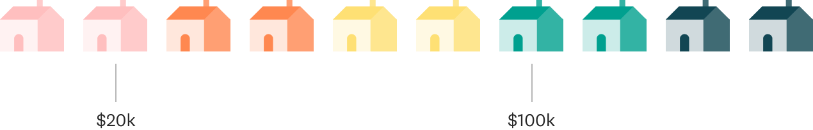
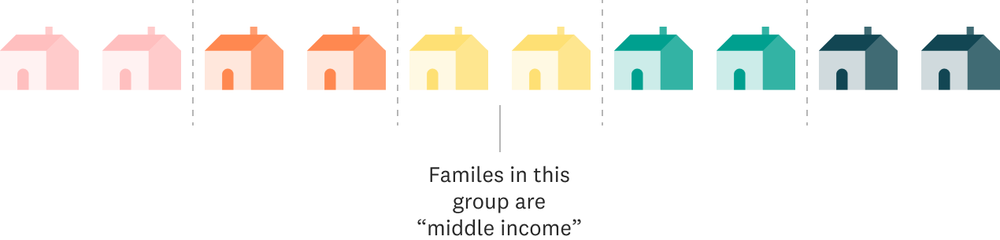
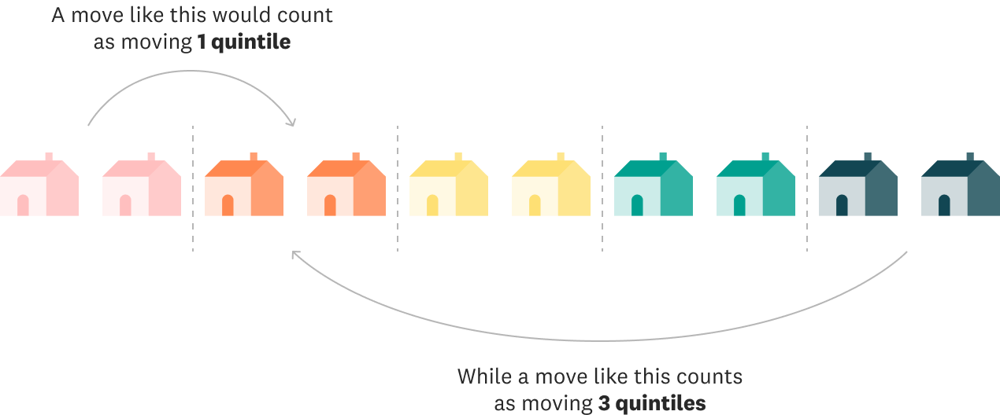

How rigid is the middle class in the US, really?
If you were to ask random Americans what income class they fall into, there’s a good chance they’ll say “middle class”, regardless of how much money they make. It stands to reason, then, that a change in their family’s situation, like a lost job or a new higher-paying one, is unlikely to change their perceptions on their social class. This is particularly true because, for many people, the “middle class” is just as much about your education, job, resources, and aspirations as it is about your paycheck.
Let’s follow 11,172 families that spent at least one year in the middle class between 1968 and 2018 to see if they actually remain in the middle over that 50 year period.
Calculating “Middle Income”
To understand movement between social classes, we need a quantitative metric: something we can measure to define the middle class. Many researchers use household income and thus numerically locate the families that are in the middle of the income distribution. Even then, there are many ways to numerically define the “middle” of an income range. One technique is to use the mathematical concept of quintiles, which requires equally dividing up the entire population into five groups based on their income. Here’s how the concept of quintiles works:
Step 1
Collect annual household income data from all families
Step 2
Sort all families in order of lowest household income to highest
Step 3
Separate families into 5 groups with the same number of families in each group. These are called quintiles. Families in the 3rd or middle quintile can be thought of as being “middle income”. For our essay, we consider “middle income” families to be the “middle class” and will use the two terms interchangeably.
Moving Quintiles
Now that you’ve gotten a primer on what quintiles are, we want to know how much you think our middle income families' economic quintiles have changed over the past 50 years. This is called economic mobility, and it refers to the ability for individuals or families to move between income quantiles.
So let’s see what you think. Have these middle income families stayed pretty close to the middle, moving only one quintile to upper-middle or lower-middle income levels or quintiles? Or do you think they have spent time in other social classes as well, perhaps even making their way from the lower class to the upper (or vice versa)? Tell us what you think.
What’s the furthest you think most middle class families have moved?
Drag the bars below to show us how many quintiles you think middle income families have moved over the past 50 years.
Keep going! You still have 100% of families unaccounted for
As the chart above shows, middle income families are actually quite mobile. Nearly all families move at least one quintile during their lifetimes, with nearly half moving two quintiles. Interestingly, more middle income families moved four quintiles - meaning they experienced both the top and bottom quintiles at least once - while fewer families shifted up or down only one quintile from the middle.
Middle class families are actually quite fluid in income distribution
We know that some middle income families have moved several quintiles over the past 50 years. But even those moves don’t happen just once. The families in this study frequently move from one income level to another year to year. Just watch as we draw one line per family and count up how many years the 7,857 families that we have at least ten years of data on have cumulatively spent at each income level.
The paths these families have taken suggest that American families can potentially experience a wide variety of financial situations over the course of their lifetimes. While some families do remain in a fairly consistent place along the income distribution, many others move up and down quite significantly, with some making it from the very bottom to the very top and others going from one of the upper income quintiles to the lower ones, sometimes in the span of just a few years!
But not all families experience the same movement throughout the quintiles. Let’s look at this same metric, cumulative years spent in each quintile by families, when separated out by the family’s race or ethnicity.
White families
Black families
Latino families
Note: Asian, Native American, and multiracial families are not shown in the charts above due to small sample sizes.
Even though all of the families we mention in this article have spent some time in the middle income quintile, their mobility up or down from this quintile varies widely by race. Generally speaking, white families experience more cumulative years above the middle quintile in either the upper-middle or upper income levels (50% of cumulative years) than below it. In contrast, Black and Latino families spend more time below the middle quintile in either lower-middle or lower income levels (50%, and 40% of cumulative years, respectively).
This racial disparity has been described several times, using different data and methods, but always landing on the same result: a persistent income gap exists by race. A study released in 2018, focused specifically on mobility of children compared to their parents, found that even when Black and white boys both started life at the highest levels of wealth, white boys were more likely to remain at that income level. In contrast, Black boys were much more likely to end up in the lower income levels as adults. Another study found that income gaps between Black and white Americans have only become slightly narrower overall since 1970, whereas Hispanic families are now further from earning incomes equivalent to white families than they were in 1970. The wage gap doesn’t seem to be closing anytime soon, as the 2018 State of Working America Wages reports that wages for white workers continued to grow at a faster rate than wages for both Black or Hispanic workers since 2000.
When it comes to economic racial inequalities in this country, though, income is just part of the story. It captures the amount of money a family has actively coming in at any point in time. What is being left out of that conversation is the wealth of each family. That is, their net worth when their savings, properties, businesses, or any other assets are taken into account and their debt is discounted. Wealth helps families continue paying their bills and providing for themselves when emergencies like a lost job, medical bills or, say, a global pandemic come along. According to The Urban Institute, “white family wealth was seven times greater than [B]lack family wealth and five times greater than Hispanic family wealth in 2016.” So, as we discuss the mobility in and out of the middle quintile, keep in mind that movement varies widely for different families, and that income mobility may have very large or very small impacts on a family’s financial well-being depending on their accumulated wealth.
The concept of the “middle class” is a powerful one in the American imagination, and headlines about how this group has been shrinking over time and losing ground financially are alarming. However, these statistics are usually based on snapshots of what the income distribution looks like at a given point in time. By examining data that follows the same families over many years, we can get a richer and more nuanced picture of how the middle class is doing.
Rather than being stuck in rigid, fixed social classes, American families experience a wide range of economic conditions over their lifetimes. Middle class families are more likely to move up and down the income ladder than they are to stay in the same quintile year after year, with some even spending time in the very lowest and very highest quintiles. However, not all families seem to have an equal opportunity of moving up, a reminder of the racial disparities that exist in this country.
Looking at data can help us better understand the lives of middle income families and the paths they take. The movement of these families helps reveal a picture of a middle class that may not be so rigid after all.
Methods
The analysis for this piece was based on data from the Panel Survey on Income Dynamics (PSID). This survey, run by the University of Michigan, has tracked the same nationally representative sample of American families over time, asking them a variety of questions about topics such as employment, income, wealth, family structure, education, and health. It is the longest running longitudinal household survey in the world, beginning in 1968. From 1968 to 1997, the survey was conducted annually; after 1997, the survey was run every other year. Our data thus spans 1968 to 2017, the most recent wave of data publicly available.
Our analysis looks at family-level income, defined as the sum of all taxable and transfer income from all members of the family, from which we constructed an entire income distribution for each year of the survey. (A family is a group of individuals related by blood, marriage or adoption living together in the same household.) These distributions then allowed us to determine the percentile each family fell in based on their income level and from there, the quintile they belonged to. We chose to look at income per family rather than per individual as individuals in the same household commonly share financial resources. Because we wanted to focus on families in their prime earning years for a more accurate picture of their financial situation, we restricted our sample to families where the head was at least 25 years old. Additionally, families had to have at least five years of observations to be included in our analysis so that we would have enough data to track their standing in the income distribution over time. This resulted in a sample of 11,172 families.
Some caveats to our analysis include not adjusting for the household size even though the number of individuals affects how far a set amount of income can go. Since most national statistics on income are reported without such an adjustment, we chose not to adjust our own numbers in order to be consistent, although this may not paint an absolutely accurate picture of how families are doing. Similarly, we did not include a cost of living adjustment to account for differences between high- and low-cost areas. Finally, our analysis for this piece looks at income rather than wealth. While wealth plays an important role in families’ financial well-being, fewer data are available for this metric.